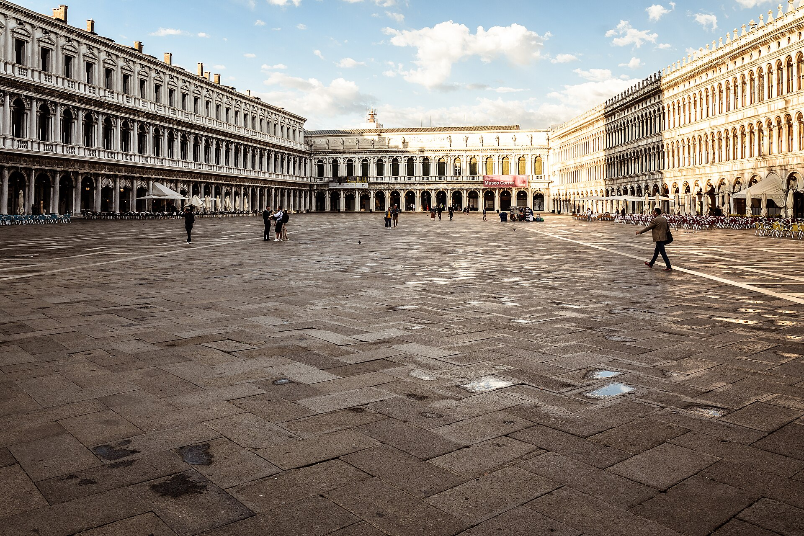

每天預設三段
18:00 aperitivo
Spritz 或氣泡水＋小食。威尼斯 Cannaregio、佛羅倫斯 Santo Spirito、羅馬 Trastevere。這是正餐前的坐，不是喝醉。
16-DAY DOSSIER · 2027.02.06 · CET 冬天時區

2027.02.06 出發 · 嘉年華尾聲 · 開腳 BR95 進／CI76 出
這是獨立的義大利行程，不是 1/30 瑞士線的續集。出發鎖定 2027 年 2 月 6 日（六）大年夜長榮 BR95 進米蘭。當天火車去威尼斯趕嘉年華 2/7–9，再佛羅倫斯、羅馬住 7 晚，2/21 從 FCO 華航飛回。不住米蘭、不北上。
去程冬天班表：TPE 23:10 → MXP 06:50+1。回程預設 CI76 2/21 11:00 FCO → TPE 05:45+1。華航羅馬線不是每天飛，訂前核對。時刻當地時間。CET＝台灣 −7。
答案：冬天城市＋威尼斯嘉年華尾聲。不是夏天的托斯卡尼麥田，也不是阿瑪菲海岸。博物館、廣場、工坊、Outlet 才開；五漁村不要加。
J 人交通裁決
威尼斯沒車。佛羅倫斯／羅馬有 ZTL。六人冬裝行李走 Frecciarossa 三段，羅馬 Leonardo Express 出機場。米蘭只當進門，不住、不飛回——少搬一次家，羅馬多兩晚。
點開每一天看景點照片、時刻、租車裁決、飯店抵達。白天博物館約 16:30–18:00 關；晚上 18:00–21:30 是 aperitivo、晚餐、燈光夜走，不是空白。D1 是桃園夜航，地面 14 晚。
機票以外，現在真正該訂的是威尼斯包棟、長榮 BR95，以及華航 CI76 有沒有 2/21。梵蒂岡不要訂 2/11、2/14、2/21。紅色＝不買上不了；深色金框＝建議升級。
人數 4 大 2 小。六人開三間雙人房通常比 包棟／整套公寓 貴一截，還不能自己做早餐。超豪 palazzo 三間總統套房不要看，那是另一個預算。
按鈕會用你們的入住日、4 成人 2 小孩打開 Booking 整套房或 Airbnb。 威尼斯嘉年華最短入住常見，三晚剛好。羅馬 7 晚，優先地鐵能到 Termini（2/21 Leonardo Express）。不住米蘭。
參考價為 2026-08 冬季／嘉年華行情（整套／晚，含典型清潔費攤提）。匯率 EUR 1＝NT$36。小孩假設 6–15 歲。
二月日落約 17:30–17:45。烏菲茲、梵蒂岡、競技場這時候關，所以白天表會停在下午——那是室內行程結束，不是一天結束。義大利城裡晚上才開始：燈光、spritz、19:30 開廚。家庭預設 21:00–21:30 回公寓，不是 16:30。22:30 以後只留嘉年華那兩晚。
每天預設三段
Spritz 或氣泡水＋小食。威尼斯 Cannaregio、佛羅倫斯 Santo Spirito、羅馬 Trastevere。這是正餐前的坐，不是喝醉。
19:30–21:00
18:00 去會撞上觀光套餐。六人要訂位，尤其嘉年華與情人節。小孩吃完可以走，大人不必再續攤。
21:00–21:30
威尼斯聖馬可、佛羅倫斯舊橋、羅馬競技場外牆／特雷維。免費、不用門票。隔天有 8 點館，就不要再加第二個夜區。
晚上不要排
這些會關。夜店、€800 舞會、22:00 才開的餐廳，帶兩個小孩不排。瑞士那趟晚上也短，是因為纜車末班與冰，跟義大利城不一樣。
逛街寫進日程。開腳之後不住米蘭，Serravalle 刪掉。要折扣精品改 2/20 羅馬南郊 Castel Romano，或乾脆市區走。
2/8 威尼斯
嘉年華平日下午。面具工坊可以進。不要加 Murano 玻璃島——冬天船冷、工廠觀光化。Castello／Cannaregio 比聖馬可好走。
2/12 佛羅倫斯
Santo Spirito、Via Maggio、Borgo San Jacopo 的皮件、紙品、金工。Via Tornabuoni 當櫥窗。戶外皮件攤多數不是工坊貨。
2/17 羅馬
櫥窗在 Condotti，能買的在 Corso。下午特雷維、萬神殿路過。Porta Portese 是週日早上，2/14 剛搬完、2/21 在機場，兩頭都不去。
2/19 羅馬
人在羅馬。聖天使堡、Ghetto、台伯河。米蘭迴廊這次不走。
2/20 週六選配
羅馬南郊 McArthurGlen，接駁約 40–50 分。不是 Serravalle。戶外村，週六人多。隔天 FCO 早飛：大袋當天收進託運，現場做 Global Blue。
不想去 Outlet
Testaccio 市場、補買、小孩睡覺。不要為了 Serravalle 再北上米蘭。
四大兩小、換 3 次住宿、威尼斯還要抬箱過橋。不要帶 6 顆硬殼大箱。 Trenitalia 沒有 SBB 那種車站到車站、後天取的服務。開腳少搬一次，羅馬連住 7 晚。
先減箱
大人共 3–4 顆中大型箱＋每人一個背包。小孩只背小包。威尼斯石橋＋階梯，四輪硬殼比兩輪軟箱更難抬。
最痛的兩天
S. Lucia 出站還要 vaporetto。公寓若要過三座橋、沒電梯，最後 300 公尺是災難。訂房硬條件：vaporetto 站步行 5 分、盡量有電梯。
火車行李架
Standard 車廂兩端有行李區。六人對號盡量同一車。不要指望列車員搬。羅馬 Termini 出站叫計程車去公寓，不要石板路拖 25 分。
Outlet 翌日早飛
手提會爆。退稅在 Castel Romano 做完。不要指望 2/21 FCO 再排退稅。
| 日 | 路段 | 大箱怎麼辦 |
|---|---|---|
| 2/7 | MXP → 威尼斯 | 跟人走 Express＋Freccia。S. Lucia 出站 vaporetto，不要抬過三座橋。 |
| 2/10 | 威尼斯 → 佛羅倫斯 | 跟人上車。SMN 出站短程計程車去 Oltrarno（可進 ZTL）。 |
| 2/14 | 佛羅倫斯 → 羅馬 | 跟人上車。Termini 出站叫車，不要走石板路。 |
| 2/21 | 羅馬 → FCO | 大箱跟人走 Leonardo Express。公寓要能 07:10 前到 Termini。 |
| 2/20 | Castel Romano（選） | 大箱留公寓。Outlet 袋當晚塞進託運。 |
義大利段沒有瑞士 SBB 行李寄送。真的搬不動再找 Carryon／Luggage Forward 這類私人服務，出發前核對取件日——短住不要寄「後天到」。
以 4 成人＋2 小孩 計算。普通住宿＝每站包一棟／一整套；最高等住宿＝必住飯店開三間。不含 Outlet 購物。小孩機票先按成人的 75% 估。開腳拆票，2/6 大年夜去程比淡季貴。
| 類 | 項目 | 普通 | 全部最高等 |
|---|
這不是報價單。機票以長榮官網為準；房價以你點進 Booking 當下為準。嘉年華威尼斯與春節機票波動可以到 ±30%。
勾選會存在這台瀏覽器（與瑞士頁分開）。沒勾完就不要出門。
景點圖為真實攝影，不是 AI。多數來自 Wikimedia Commons；Via Montenapoleone 為你指定的街道實拍。完整出處見下方。